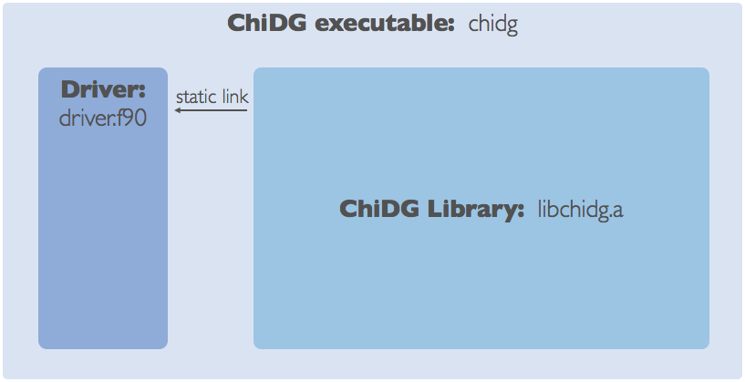

Code details¶
Overview
From a high-level perspective, ChiDG is a library. A ChiDG environment can be imported from the library and used by some driver. For example, the ChiDG executable is just a driver file that links with the ChiDG library and creates a ChiDG-object, which is then used to initialize the framework, read data, and run a simulation.
{kind=link}
ChiDG Library
The ChiDG library contains the infrastructure(classes, datatypes, etc.)
for representing concepts related to solving partial differential
equations on discretizations of space and time. These are things like
a computational grid, equation sets, time integrators, etc.
The ChiDG library also contains a ChiDG API. This is provided through
an object chidg_t. In this way, all of the capability of the ChiDG
library can be accessed and driven by creating a chidg object, and
using high-level routines that it provides. Things like
chidg%read_grid('mygrid.h5') and chidg%set('Nonlinear Solver', 'Quasi-Newton').
{kind=link}
Extended topics: